Toward Active-Vision Foundation Models
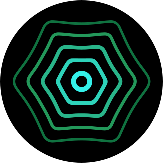
Lamarck LabsDeep neural networks as models of vision
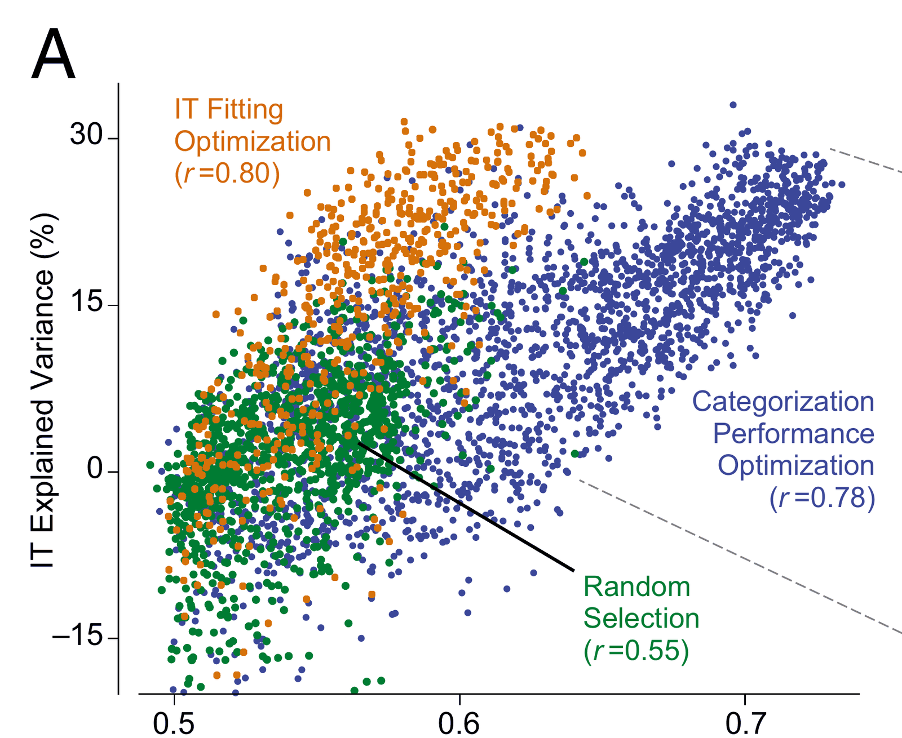
Categorization performance
Noise-corrected IT predictivity
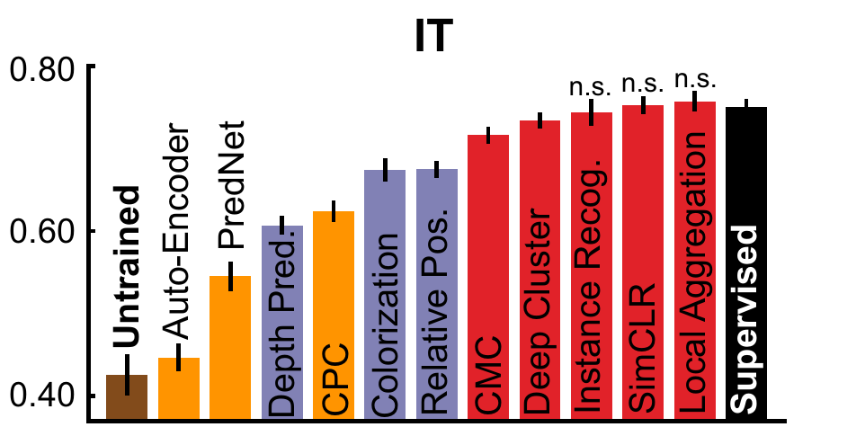
DINOv3


DINOv3 ViT-B/16, Siméoni et al., TMLR 2026
DINOv3 and the brain
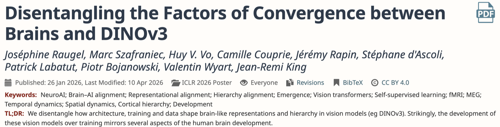
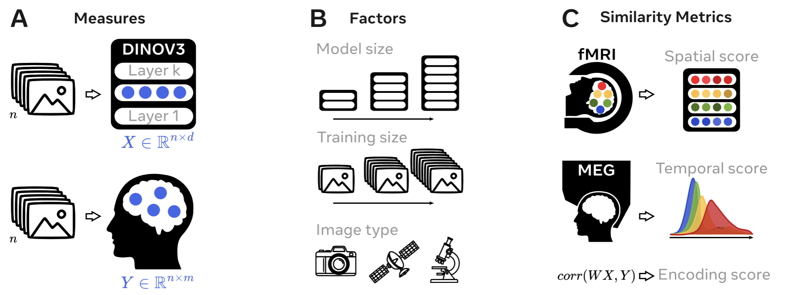
Late alignment with higher-order cortical areas
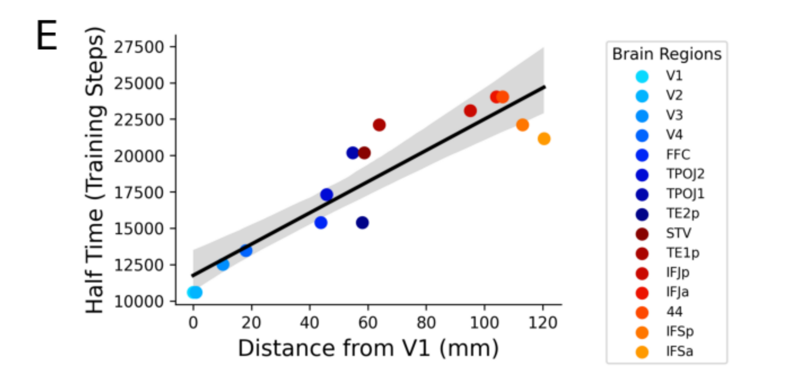
What's missing?
A brief history of deep active computer vision
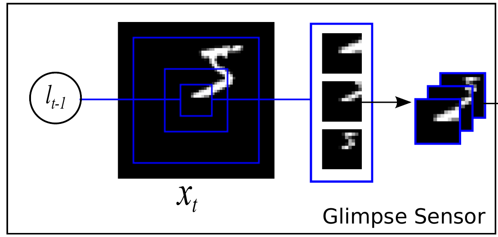
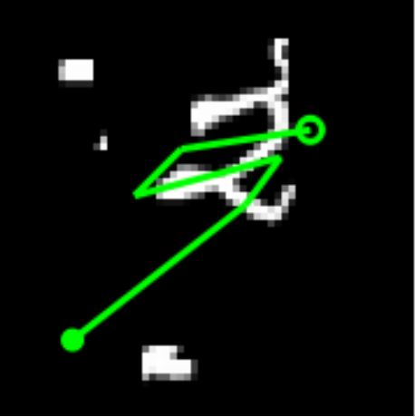
Mnih et al. 2014, NeurIPS
The wide gap between passive and active computer vision


What's in an active-vision model?
Seeing
Memory
Observer
Choosing where to look
Action selection
Policy
No policy can make up for a poor observer. A general-purpose observer lets you use any policy.
Where people look depends on their goal
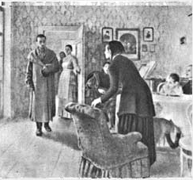
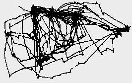
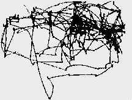
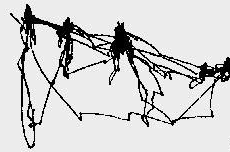
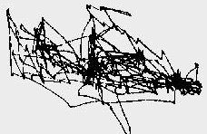
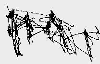
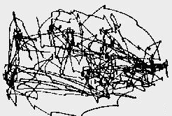
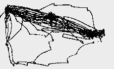
Toward Active-Vision Foundation Models
| Passive foundation models | Prior active models | Active-Vision Foundation Models | |
|---|---|---|---|
| Instantaneous vision | ✓ | ✓ | ✓ |
| Memory | ✗ | ✓ | ✓ |
| Visuospatial intelligence | ✓ | ✗ | ✓ |
| Task-agnostic | ✓ | ✗ | ✓ |
| Policy-agnostic | — | ✗ | ✓ |
Canvas Vision Transformer
Toward Active-Vision Foundation Models
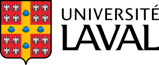
NeurIPS 2026


Architecture
Pretraining
Experiments
Processing a glimpse with a Vision Transformer (ViT)
Vision
Transformer
Transformer
Integrating visual information across viewpoints?


01p(table)
The Canvas Vision Transformer architecture
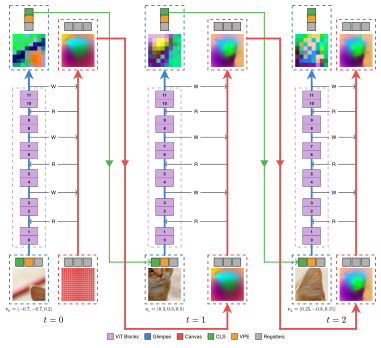
Scene-Relative Rotary Position Embeddings (SR-RoPE)
Glimpse patchesCanvas patches
Architecture
Pretraining
Experiments
Before knowing where to look,
we should know how to see.
Pretraining policies
Policy-agnostic dense latent distillation
Glimpse
(x, y, s)
Prediction
MSE
TargetDINOv3, whole scene
…
Glimpse 1


Glimpse 2


Glimpse 3


Glimpse 21


Pretraining CanViT-B
13.2 millionImageNet-21k scenes
1 billionglimpses
1GPU
DINOv3 7B
61,440 H100-hours
CanViT-B
166 + 8 H100-hours
Integrating visual information across viewpoints

01p(table)
Architecture
Pretraining
Experiments
A new active-vision state of the art
End-to-endFrozen
Coarse-to-Fine (C2F) and Fine-to-Coarse (F2C)
Entropy-Guided Coarse-to-Fine (EG-C2F)
Accuracy by viewing policy
ADE20K accuracy against inference compute
Learning where to look
Pretraining
1 billion glimpses
Policy learning
640 thousand glimpses
Open-source and easy to use
uv add canvit-pytorch
scene.jpg


logits.argmax(1)

Toward CanViT 2
CanViT
Static scenes (images)
Uniform acuity
CanViT 2
Dynamic scenes (videos)
Eccentricity-dependent acuity
 Paper
Paper Code
Code Models
ModelsBackup
An emergent hierarchy within each glimpse
Canvas Attention Write residuals
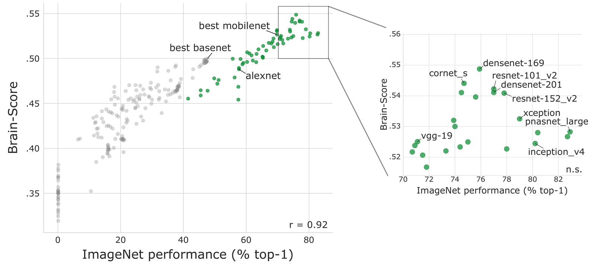
Toward AVFMs for Neuro-AI
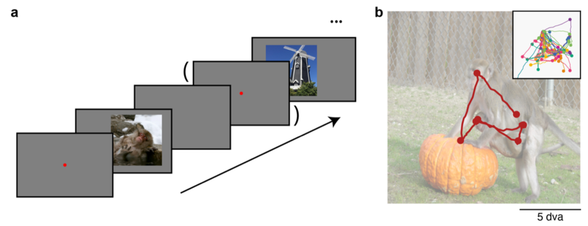
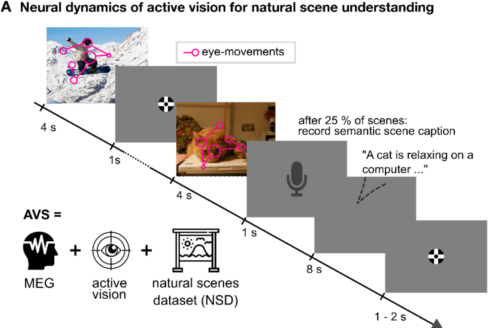
CanViT in action
Extrapolation to unobserved regions
DINOv3, each glimpse
CanViT, far end
CanViT, near end
CanViT, both
Classes


p(table)


Spatial coverage and perception of detail